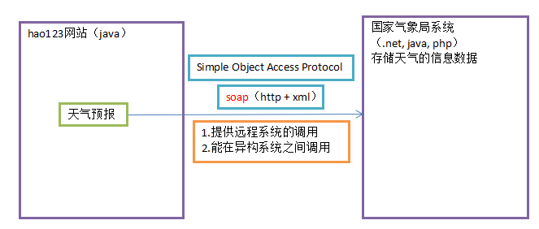

1、什么是服务
1）现在的应用程序变得越来越复杂，甚至只靠单一的应用程序无法完成全部的工作。更别说只使用一种语言了。
2）大家在写应用程序查询数据库时，并没有考虑过为什么可以将查询结果返回给上层的应用程序，甚至认为，这就是数据库应该做的。
其实不然，这是数据库通过TCP/IP 协议与另一个应用程序进行交流的结果。
而上层是什么样的应用程序，是用什么语言，数据库本身并不知道，它只知道接收到了一份协议，这就是SQL92查询标准协议。
3）既然数据库可以依据某些标准对外部其他应用程序提供服务、而且不关心对方使用什么语言，那我们为什么就不能实现跨平台、跨语言的服务呢？
只要我们用任何语言编写的代码，可以被任意的语言所调用，我们就实现了跨平台，跨语言的服务！
WebService定义：顾名思义就是基于Web的服务。它使用Web(HTTP)方式，接收和响应外部系统的某种请求。从而实现远程调用。
2、不同的平台间的数据通讯，需要一种通用的协议
3、hao123的webservice应用演示
soap扮演的角色就是在不同的异构系统之间进行信息的传递
国家气象局提供webservice，其他平台通过soap协议调用webservice

Webservice理解：我们可以调用互联网上查询天气信息Web服务，然后将它嵌入到我们的程序(C/S或B/S程序)当中来，当用户从我们的网点看到天气信息时，他会认为我们为他提供了很多的信息服务，但其实我们什么也没有做，只是简单了调用了一下服务器上的一段代码而已。WebSerice可以将你的服务(一段代码)发布到互联网上让别人去调用,也可以调用别人机器上发布的WebService,就像使用自己的代码一样。